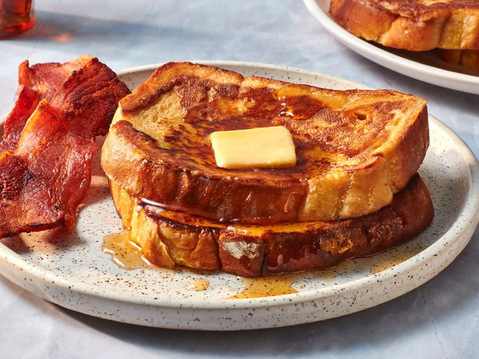

Fluffy French Toast
Fluffy French Toast

Description
Toast with eggs, seasoned with sugar and cinnamon.
allrecipes.com says:'This fluffy French toast recipe is crisp on the outside, but perfectly soft and tender on the inside.'
Ingredients
- Bread
- Eggs
- Sugar
- Vanilla
- Cinnamon
- Salt
Steps
- Slowly whisk the milk into the flour, then whisk in the remaining ingredients.
- Saturate the bread slices in the batter.
- Cook the French toast on a lightly oiled griddle or pan until golden on both sides.